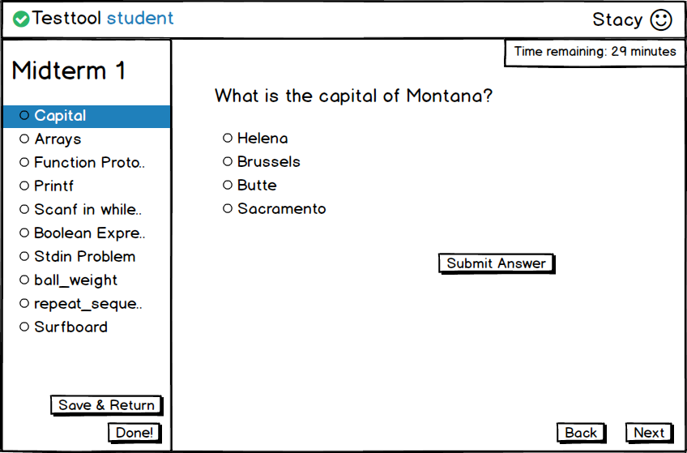
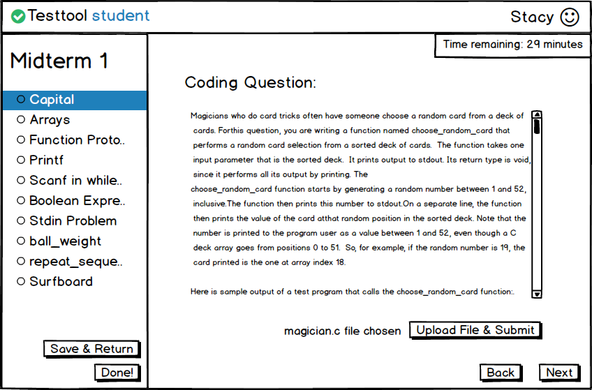
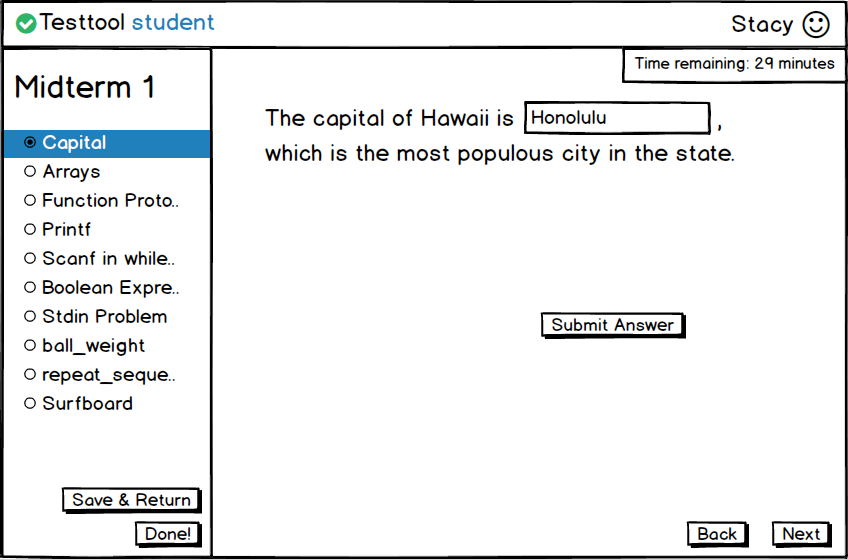
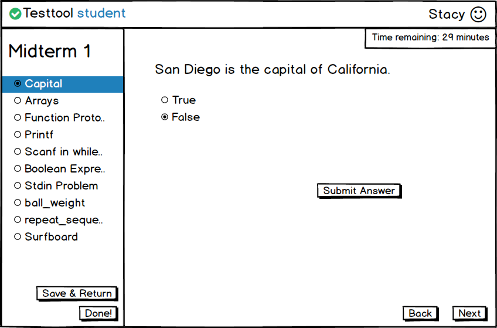
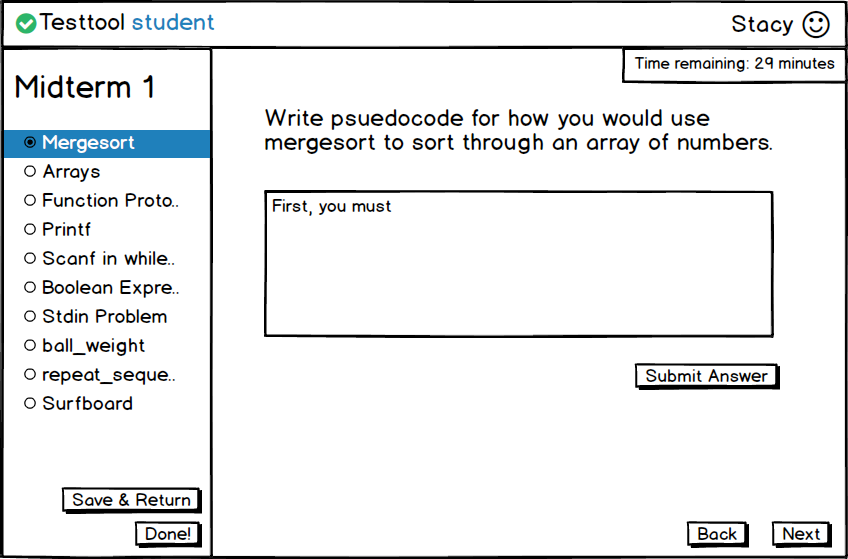
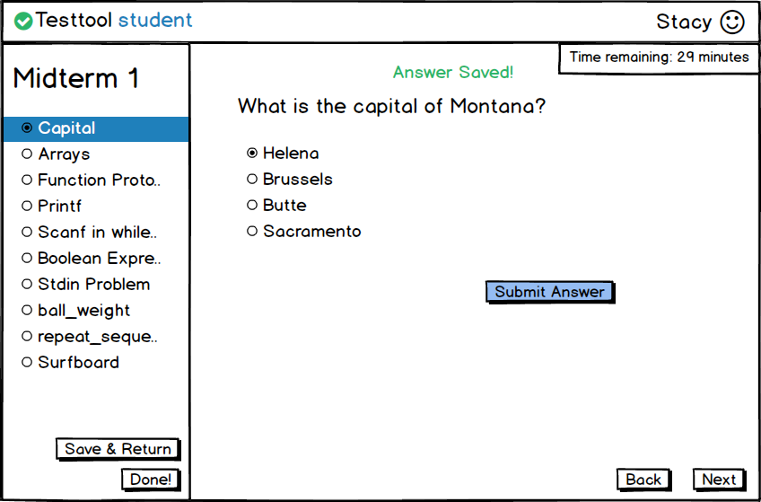
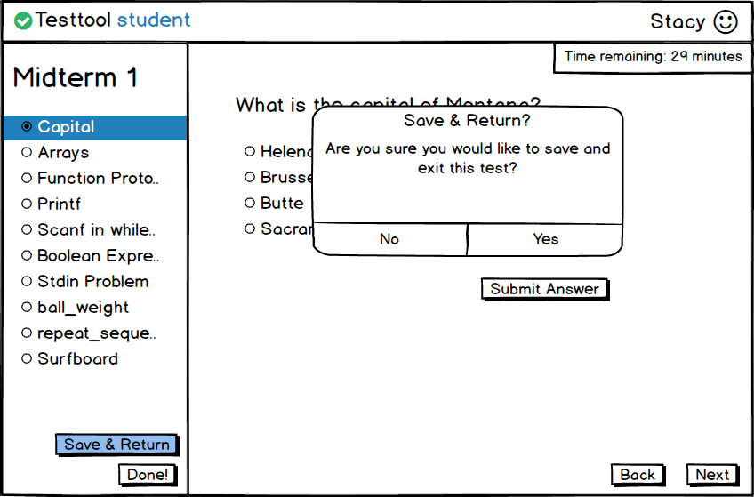
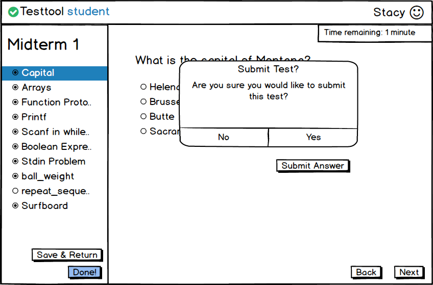

When the student selects 'Yes!' in the 'Start Test' screen, the system displays the screen below in Figure 2.5.4.

Figure 2.5.4: Test View.
Other question types are shown in Figures 2.5.5 through 2.5.8

Figure 2.5.5: Coding Question.

Figure 2.5.6: Fill-in-the-Blank Question.

Figure 2.5.7: True or False Question.

Figure 2.5.8: Short Answer Question.
Sketch of the remainder:
When the student selects an answer, the system highlights the 'Submit Answer'
The system also fills the dot next to the question in to indicate it was filled out

Figure 2.5.9: First Question Answered.
When the student selects 'Save & Return' a message box asks her if she really does want to save and exit.
If she chooses 'No' she is taken back to the current question she's on.
If she chooses 'Yes' she is taken back to her student home screen.

Figure 2.5.10: Message Box for Save & Return.
When the student selects 'Done!' a message box asks if the student is sure she wants to submit the test.
If she chooses 'No' the message box goes away.
If she chooses 'Yes' she is taken back to her student home screen.

Figure 2.5.11: Message Box for Submitting Test.